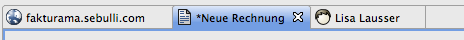

Im Bereich der Editorfenster können gleichzeitig mehrere Editoren dargestellt werden.
Ein Klick auf die Titelleiste jedes Editors öffnet ein Kontextmenü. Darüber ist es möglich, die Größe und Position zu ändern und diesen oder mehrere Editoren gleichzeitig zu schließen.
Wurde der Inhalt eines Datensatzes mit dem Editor geändert, wird dies durch einen * vor dem Namen in der Titelleiste angezeigt. Ein Speichern aktualisiert den Datensatz.